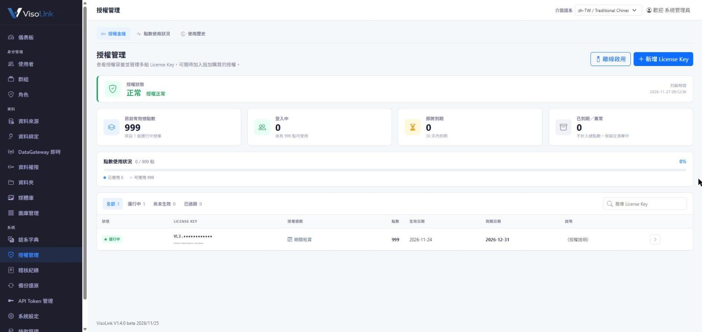
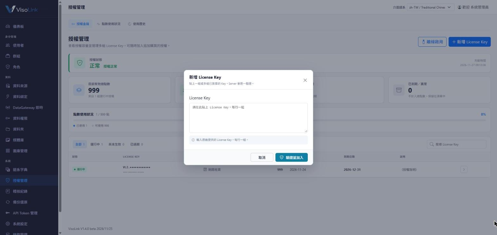
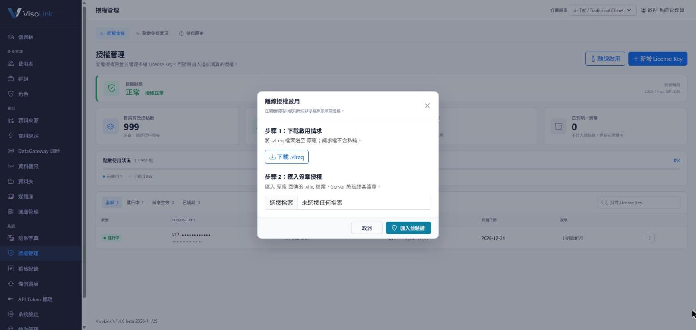
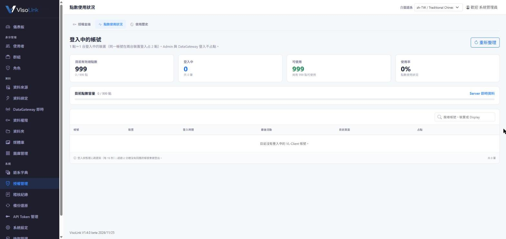
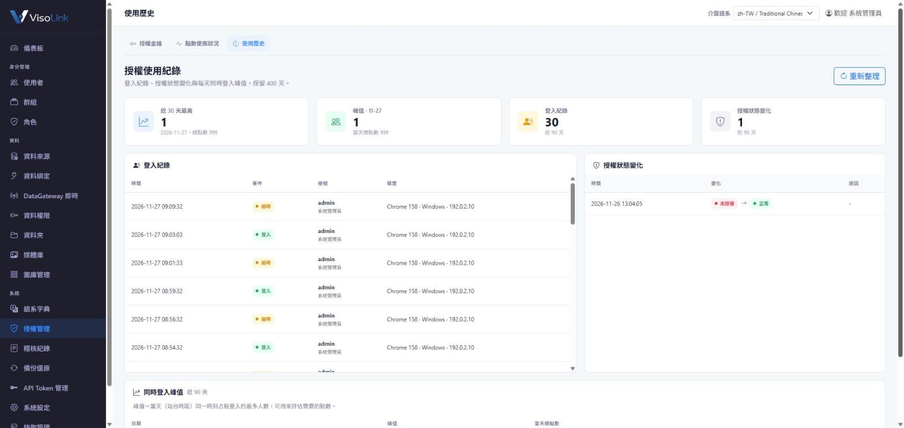

License Management 授權管理
查看授權容量與有效期，管理 License Key，並追蹤登入中的 VL-Client 帳號占用的點數。1 點＝1 台登入中的裝置；Admin 與 DataGateway 登入不占點。
查看授權總覽

- 點選「系統 → 授權管理」，預設在「授權金鑰」分頁。
- 確認授權狀態為「正常」，以及有效總點數、登入中與可使用點數。
- 查看「即將到期」（30 天內）與「已到期／異常」數量，提早安排續約。
篩選授權與查看詳細資料
- 在清單上方切換「全部、運行中、尚未生效、已過期」。
- 在「搜尋 License Key」輸入部分內容縮小範圍。
- 點列尾「›」開啟詳細資料，確認授權週期、點數、生效與到期日。
新增 License Key

- 點選「新增 License Key」。
- 貼上原廠提供的 License Key；多筆時每行一筆。
- 點選「驗證並加入」。
- 確認驗證成功及容量更新。
新授權顯示在清單，總點數、有效期與狀態同步更新。
手冊與截圖不得包含真實 License Key。
執行離線授權啟用
在隔離網路中，使用啟用請求檔與簽章回應檔完成啟用。

- 點選「離線啟用」。
- 點「下載 .vlreq」，將檔案送至原廠。
- 取得原廠回傳的 .vllic 檔案。
- 在「步驟 2：匯入簽章授權」選擇檔案，點「匯入並驗證」。
- 確認新 License 出現在清單。
新 License 顯示為運行中，容量與到期資訊正確。
授權安裝識別碼不隨備份移動；還原到另一台 Server 後，離線授權需重新申請。
刪除 License
- 確認刪除後的總容量仍足夠。
- 開啟 License 詳細資料。
- 點選刪除並確認。
- 確認容量與清單更新。
查看點數使用狀況

- 切換至「點數使用狀況」分頁。
- 查看目前有效總點數、登入中、可使用與使用率。
- 在搜尋框輸入帳號、裝置或 Display 找到特定登入。
- 需要最新狀態時點「重新整理」。
計算方式：同一帳號在兩台裝置登入占 2 點。登入狀態隨心跳更新（每 15 秒），超過 2 分鐘沒有回應的帳號會被登出並釋放點數。
強制登出以釋放點數
點數不足、需要立即讓出點數時，管理者可以把某個登入中的裝置強制登出。
- 在「點數使用狀況」找到要登出的帳號與裝置。
- 點該列「強制登出」。
- 確認視窗顯示帳號與裝置後確認。
- 確認清單已移除該登入，點數已釋放。
強制登出後，對方畫面會顯示被管理員登出；對方可以再登入。執行前先確認對方不在進行重要操作。
查看授權使用歷史

- 切換至「使用歷史」分頁。
- 在「登入紀錄」查看登入、逾時等事件與裝置。
- 在「授權狀態變化」查看狀態何時改變與原因。
- 在「同時登入峰值」查看每天最多同時登入人數，評估需要的點數。
紀錄保留 400 天。